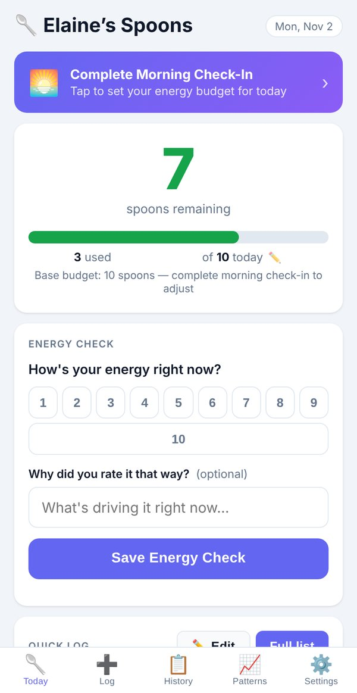
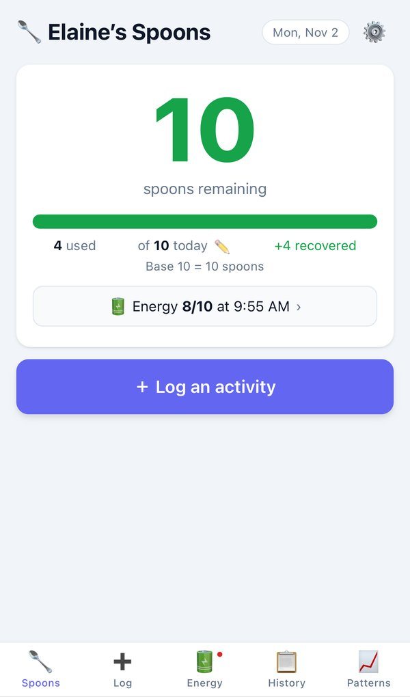
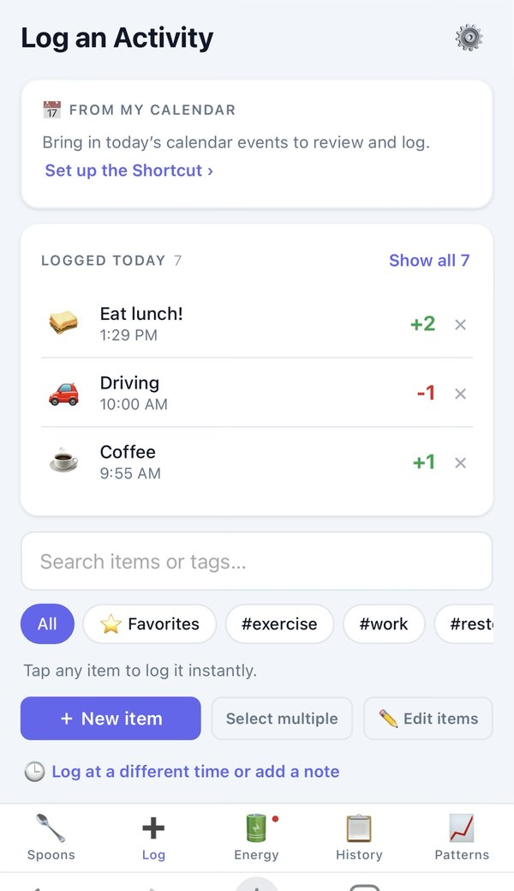
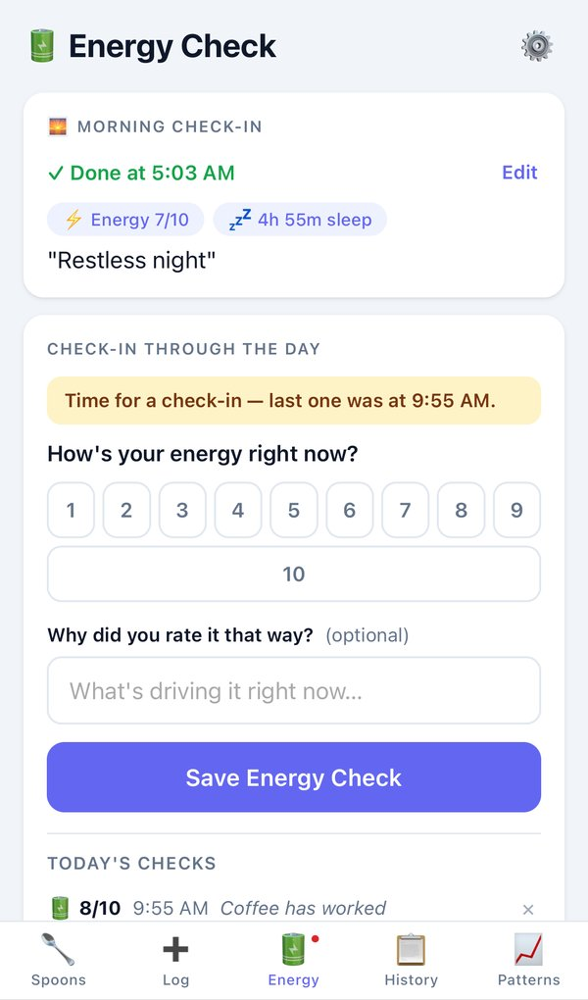
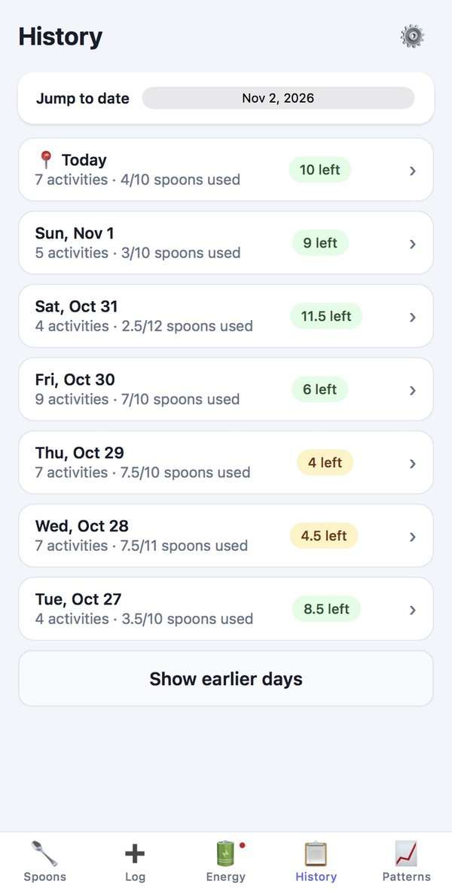
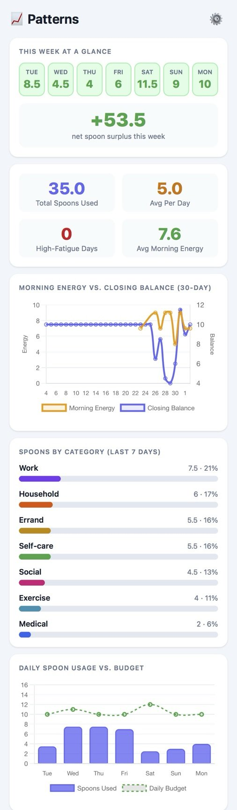

I built the energy tracker I couldn't find anywhere else, with AI writing the code. Living in it showed me what was missing. So I kept building, and I still am.
I built Spoon Tracker to pace my own energy, and to learn to build with AI while I did it. Over three versions I audited my own behavior against the app, simplified it so other people could use it, and rebuilt it around its main goal. Version three puts the most important action on every screen above the fold, and it's the tool I'm using to get through surgery.
I scoped the problems, wrote the prompts, caught the mistakes, and shipped. AI wrote every line of code.
I first heard about spoon theory from a counselor about eight years ago. You start each day with a limited number of spoons, every activity costs one, and when they're gone, they're gone. Running out mid-afternoon can mean you can't cook dinner or take a shower. It takes actual planning, not willpower.
I looked for an app that tracked energy the way I needed. I didn't find one, so I built one. I'm a UX researcher, not a developer, and I used Claude to write the code. Building it was also how I stopped watching AI tools improve from the sidelines.
How can I actually track every activity that gives or takes spoons?
In research terms: do the app's presets capture the activities that drive my energy, based on 90 days of real behavior?
I started using the app every day in March, and I made an update whenever my usage showed me something. I started with 17 activity presets, the obvious stuff: physical therapy (PT), my exercise class, grocery shopping, cooking, walks with my dog Charlie, sleep. That felt like enough at the time. It wasn't.
I was hitting "custom entry" constantly. Occupational therapy (OT) exercises every morning, no preset. Phone calls with friends every week, no preset. Job search work eating real cognitive energy, no category for it at all. And at some point I realized I had started putting "Take Shower" on my calendar, and it had nowhere to go in the app either. That one stopped me cold.
The thing about designing for yourself: The presets you build at the start reflect what you think you do. Ninety days of actual use shows you what you actually do. The gap between those two things is what this is about.
I compared 90 days of my Google Calendar, March through June 2026, against the app's 17 presets to see what wasn't covered.
Why the calendar and not the app logs? App logs only show what the presets let me log easily. If there's no preset for OT exercises, those entries go in as "custom" or don't get logged at all. My calendar captured my actual days, not just the days my app was designed to see.
Catalogued every recurring activity, how often it showed up, and roughly what it costs me.
Flagged anything without a good match among the 17 presets.
Estimated a spoon cost for each gap from lived knowledge, then sorted them into zones.
Asked whether whole categories of my life were missing. They were.
Sorted everything into tiers by frequency and impact, then shipped the changes with AI.
Thirteen recurring activities had no preset, and three whole parts of my life had no category: work, travel, and self-care.
I was scheduling "Take Shower" in my calendar. Not as a preference or a reminder. As a necessity, to make sure I didn't forget it or run out of energy to do it before the day ended.
A shower isn't just a missing preset. It's a thing healthy people never think about and my neuropathy makes me plan for. The app had rest for downtime and recovery for restorative credit, but nothing for the basic cost of maintaining a body: showering, getting dressed, hygiene. Adding a self-care category was the app finally being honest about what my days involve.
Activities stacked back to back drain more than the sum of their parts, and the app only catches it when every activity gets logged. That finding kept coming back, and in version three it turned out to matter more than anything else.
A limitation worth naming: Calendar data captures what you planned, not what happened. My daily workout is on the calendar every day, and I don't always do it. The calendar can't tell the difference between "did this" and "meant to do this."
I added 17 presets in three tiers. Tier 1 was the non-negotiable stuff, high frequency and missing entirely: OT exercises, speech-language pathology (SLP) work, a daily workout, phone and video catch-ups, job search blocks, travel days, and massage as a recovery credit instead of a cost.
The one hard constraint: all 17 original activity IDs had to stay exactly as they were. Everything I'd already logged was keyed to those IDs, and renaming anything would have broken months of real data. So the update was purely additive. One commit, pushed to main, and GitHub Pages rebuilt automatically.
No regressions. Every existing log entry stayed intact. The app still knows about every spoon I spent before the update.
Some fixes only show up by living in it. A week later I found the app defaulted to Coordinated Universal Time (UTC), so my "today" rolled over at the wrong hour. One conversation, one prompt, one commit.
Can someone besides me use it?
In research terms: can a new user set up the app and log their day without the designer's context?
In June I added zones, based on Gay Hendricks' framework from The Big Leap, plus a fifth zone, Maintenance, for PT, OT, SLP, and my exercise class. On paper it made sense. In daily use it made logging confusing, and easy logging is the whole point. Zones didn't add value, so I took them out.
On July 21 I shipped the main version two release. The goal was to simplify, and to let other people use the app.
Redesigned the Today tab around energy checks and a quicker check-in.
Added Quick Log buttons you can edit right from Today.
Added the Patterns tab, so trends show up over time.
Added profiles and onboarding, so a new person can set up the app for themselves.
Will I actually use it when I need it most?
In research terms: does daily logging cost less energy than it helps me save?
Opening the app to new people taught me that what's most useful to me isn't what everyone needs. I had to keep what I needed and hide it from the general use case. A new person sees a clean app. I still see my own setup. It's been easy and enjoyable to use.
Simplified the whole app so its main goal is front and center.
Put the most important action on every tab above the fold, so nobody has to scroll for it.
Tightened the Activity Log and added categories and tags to activities for future analysis.
Built out the Patterns tab with more charts to see trends over time.






Stacking tasks turned out to matter more than I expected. It has helped me take more breaks. When my to-do list is long and my energy is in the yellow, I give myself time so I don't burn out. If things move days, that ends up being fine.
After I recover from surgery, I'll run user tests and stakeholder interviews with new people, and I'm already working out where to recruit them.
Using calendar data instead of app logs was the right call. App logs only show what your presets let you see. The calendar saw my whole day whether the app was ready for it or not.
Being the only participant in your own study is a real validity problem, and I'm not going to pretend otherwise. Every spoon cost I assigned is a judgment call, not a measured value. My 1-spoon shower might be someone else's 3-spoon shower. For a personal tool, lived knowledge is the right data. For other people, it's a hypothesis, which is why testing comes next.
What I'd do differently: From day one, I'd log custom entries separately with the raw text typed. That would have surfaced gaps automatically instead of requiring a manual calendar comparison.